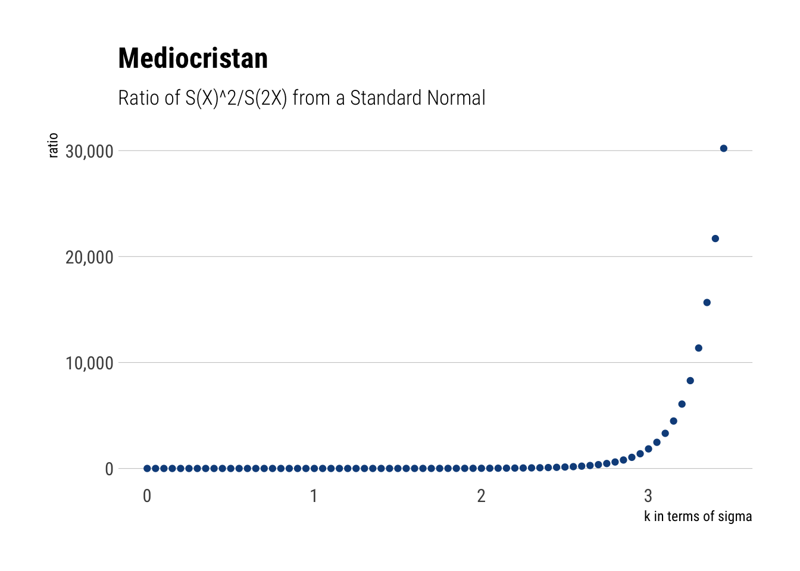
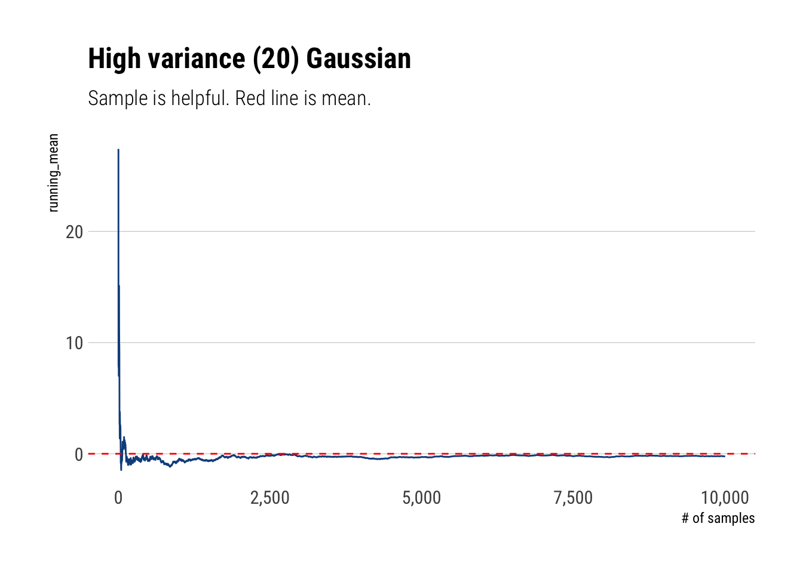
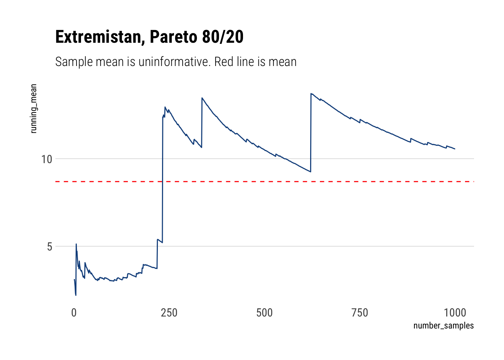
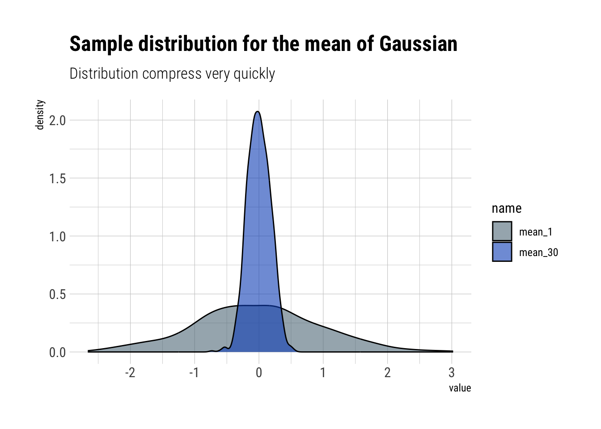
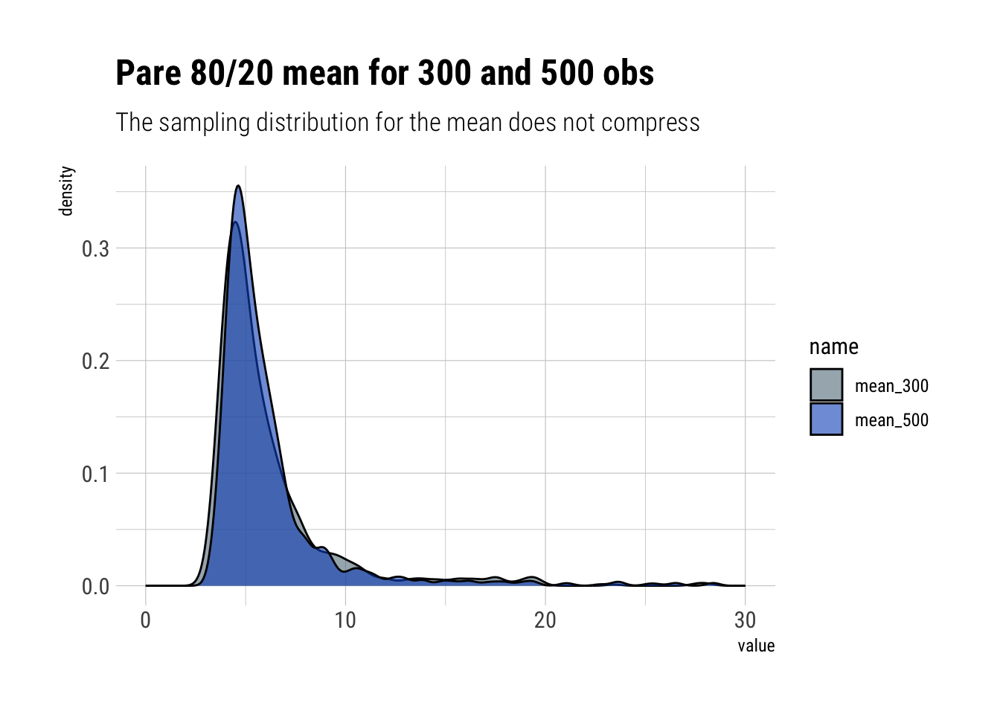

Statistical estimation is based on the LLN and CLT. The CLT states that the sampling distribution will look like a normal. The LLN that the variance of the normal will decrease as our sampling size increases.
Or so does Nassim Nicholas Taleb says in his recently published technical book, wherein he explains how common practice statistical methodology breaks down under the Extremistan regime. That is, under fat tails.
In this post, I’ll try my best to understand why is he right. The key idea, I believe, when extremely rare things can happen, they alone determine the distribution. Thus, one cannot hope to understand it with normal samples.
A first intuitive approximation
Taleb begins by giving an intuitive explanation. Imagine that you are working with a sample. You observe a large deviation from the values that you have. Is this deviation caused by one big observation or multiple medium deviations.
Assume a large deviation X. - In Mediocristan, the probability of sampling higher than X twice in a row is greater than sampling higher than 2X once. - In Extremistan, the probability of sampling higher than 2X once is greater than the probability of sampling higher than X twice in a row.
Let’s try to replicate what he did in R. He proposes to analyze the ratio of observing exceeding deviations in terms of sigmas for a normal. For example, the ratio of the Survival of two 2-sigma events to the Survival one 4-sigma event. Then, he plots this ratio for different values of \(\sigma\). Let’s do it in R.
x <-seq(0, 3.45, 0.05)two_x <- x*2ratio <-((1-pnorm(x))^2)/(1-pnorm(two_x))tibble(ratio) %>%cbind(x) %>%rename('k'= x) %>%mutate(k =as.double(k)) %>%arrange(k) %>%ggplot(aes(x = k, y = ratio)) +geom_point(color ='dodgerblue4') + hrbrthemes::theme_ipsum_rc(grid ="Y") +scale_y_continuous(labels = scales::comma) +labs(x ="k in terms of sigma",title ="Mediocristan", subtitle ="Ratio of S(X)^2/S(2X) from a Standard Normal")

Thus, it is almost impossible to fathom a 4-sigma event with a standard normal. It is much more likely that our deviation comes from two 2 sigma events. Thus, the distribution can be inferred disregarding the extreme. However, not all distributions work the same way. Let’s see how the LLN works differently for different types of random variables.
Law of Large Numbers
What are the consequences of these differences? Imagine the law of large numbers. We are sampling to estimate the mean. With a standard normal, even if we get a deviation, it will be a mild one and it will probably come from some consecutive observations. Thus, with enough observations, the weighted contribution to the mean of these observations won’t derail our estimates.
However, in Extremistan this does not play out; at least, not quick enough. Given the size of the deviations we get every once in a while, they alone will determine our estimates; making the rest of data meaningless.
Let’s check this with some simulations.
Mediocristan
In Mediocristan, given the tamed randomness that we are dealing with, we do not expect large deviations to play a significant role. As we said before, we will only have medium deviations from the mean that are smooth over pretty quickly as their weighted contribution to the average drops. That is, the LLN is with a relatively small number of observations.
samples <-10000thin <-rnorm(samples, sd =20)fat <-rlnorm(samples, sdlog =5,meanlog =0)cumulative_mean <-function(numbers) { x <-seq(1, length(numbers)) cum_mean <-cumsum(numbers)/x cum_mean}thin_cum_mean <-cumulative_mean(thin)thin_cum_mean %>%tibble(running_mean = .) %>%add_rownames(var ='number_samples') %>%mutate(number_samples =as.double(number_samples)) %>%arrange(number_samples) %>%ggplot(aes(x = number_samples, y = running_mean)) +geom_line(color ='dodgerblue4') +geom_hline(yintercept =0, linetype =2, color ='red') + hrbrthemes::theme_ipsum_rc(grid ='Y') +scale_x_continuous(labels = scales::comma) +labs(x ="# of samples",title ="High variance (20) Gaussian", subtitle ="Sample is helpful. Red line is mean.")

Extremistan
However, in Extremistan we are on an entirely different regime. As large deviations determine the whole distribution, most of the information we get about the distribution is pure noise that won’t be helpful to estimate the mean. Indeed, Taleb writes:
The mean of a distribution will rarely correspond to the sample mean; it will have a persistent small sample effect (downward or upward)…
samples <-1000fat <-1/(runif(samples))^(1/1.13)fat_cum_mean <-cumulative_mean(fat)mean <-1.13/0.13fat_cum_mean %>%tibble(running_mean = .) %>%add_rownames(var ='number_samples') %>%mutate(number_samples =as.double(number_samples)) %>%arrange(number_samples) %>%ggplot(aes(x = number_samples, y = running_mean)) +geom_line(color ='dodgerblue4') + hrbrthemes::theme_ipsum_rc(grid ='Y') +scale_y_continuous(labels = scales::comma) +geom_hline(yintercept = mean, linetype =2, color ='red') +labs(title ='Extremistan, Pareto 80/20',subtitle ='Sample mean is uninformative. Red line is mean')

Central Limit Theorem
In the same way, when a distribution is dominated by its extremes, it will take much, much longer for the sampling distribution to compress than it would with your average Gaussian.
Mediocristan
gaussian_mean <-function(sample_size) { samples <-rnorm(sample_size)return(mean(samples))}mean_30 <- purrr::rerun(1000, gaussian_mean(30)) %>%unlist()mean_1 <-rnorm(1000)tibble(iteration =seq(1, 1000, 1), mean_30, mean_1) %>%pivot_longer(cols =starts_with("mean")) %>%ggplot(aes(x = value, fill = name)) +geom_density(alpha =0.6) + hrbrthemes::theme_ipsum_rc() + hrbrthemes::scale_fill_ft() +labs(subtitle ="Distribution compress very quickly",title ="Sample distribution for the mean of Gaussian")

Extremistan
pareto_mean <-function(sample_size) { fat <-1/(runif(sample_size))^(1/1.13)mean(fat)}mean_300 <- purrr::rerun(1000, pareto_mean(300)) %>%unlist()mean_500 <- purrr::rerun(1000, pareto_mean(500)) %>%unlist()tibble(iteration =seq(1, 1000, 1), mean_300, mean_500) %>%pivot_longer(cols =starts_with("mean")) %>%ggplot(aes(x = value, fill = name)) +geom_density(alpha =0.6) +scale_x_continuous(limits =c(0, 30)) + hrbrthemes::theme_ipsum_rc() + hrbrthemes::scale_fill_ft() +labs(title ="Pare 80/20 mean for 300 and 500 obs",subtitle ="The sampling distribution for the mean does not compress")

Conclusions
When a distribution is determined by a rare event, then, by definition, you will almost never observe its true properties from a sample. Also, the intuition that we gain from studying the Gaussian dulls our senses: it conditions us to a type of tame randomness that goes in the total opposite direction.